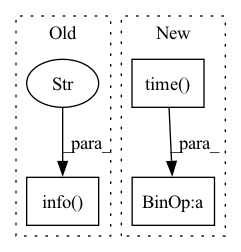

Pattern ID :8249
Before Change
if FLAGS.use_gpu:
strategy = tf.distribute.MirroredStrategy()
else:
logging.info("Use TPU at %s" ,
FLAGS.tpu if FLAGS.tpu is not None else "local")
resolver = tf.distribute.cluster_resolver.TPUClusterResolver(tpu=FLAGS.tpu)
tf.config.experimental_connect_to_cluster(resolver)
tf.tpu.experimental.initialize_tpu_system(resolver)
strategy = tf.distribute.TPUStrategy(resolver)After Change
logging.info(
"Starting to run eval step %s of epoch: %s", step, epoch + 1)
test_start_time = time.time()
test_step(test_iterator)
ms_per_example = (time.time() - test_start_time) * 1e6 / eval_batch_size
metrics["test/ms_per_example"].update_state(ms_per_example)
logging.info(In pattern: SUPERPATTERN
Frequency: 4
Non-data size: 3
Instances Fragment ID: 29048959
Project Name: google/uncertainty-baselines
Commit Name: 9ecb3b3be23c87f66826ff1849bb00f300f08cec
Time: 2021-01-10
Author: 20114038+nband@users.noreply.github.com
File Name: baselines/diabetic_retinopathy_detection/deterministic.py
M Class Name: AnonimousClass
N Class Name: AnonimousClass
M Method Name: main(1)
N Method Name: main(1)
M Parent Class:
N Parent Class:
M File Name: baselines/diabetic_retinopathy_detection/deterministic.py
N File Name: baselines/diabetic_retinopathy_detection/deterministic.py
M Start Line: 85
M End Line: 142
N Start Line: 97
N End Line: 268
Before Change
result = min(results, key=lambda x: x["js_place_length"])
logger.info(f"length_true={result["js_place_length"]:.2f}")
logger.info(f"planning_time={time.time() - t_start:.2f} [s]" )
execute_plan(env, result)
After Change
if "js_place_length" in result:
results.append(result)
if (time.time() - t_start) > timeout:
break
if not results:
logger.error("No solution is found") Fragment ID: 29048963
Project Name: wkentaro/reorientbot
Commit Name: ff8d814b270cd083c0295ae7f30192ca46d865f5
Time: 2021-05-28
Author: www.kentaro.wada@gmail.com
File Name: examples/reorient/learned.py
M Class Name: AnonimousClass
N Class Name: AnonimousClass
M Method Name: plan_and_execute_reorient(5)
N Method Name: plan_and_execute_reorient(5)
M Parent Class:
N Parent Class:
M File Name: examples/reorient/learned.py
N File Name: examples/reorient/learned.py
M Start Line: 30
M End Line: 142
N Start Line: 76
N End Line: 144
Before Change
for epoch in range(start_epoch, epochs):
eta_estimator.epoch_start()
logging.info(f"\n-------------------------- epoch {epoch + 1} --------------------------" )
model.train()
metrics.clear()
for idx, (x_train, y_train) in enumerate(train_data):After Change
f1=metrics.f1(),
top_5_accuracy=metrics.top_5_accuracy(),
)
speed_in_sample_per_s = train_data.batch_size / (time.time() - btic)
lr = scheduler.get_last_lr()[0] if scheduler else lr
logging.info(
f"epoch {epoch + 1:03d} batch {idx:4d}: loss: {metrics.avg_loss():.4f}, acc: {metrics.accuracy():.4f}," Fragment ID: 29048982
Project Name: hpi-xnor/bitorch
Commit Name: a98f938d313f05f5c633f8e97478609f67595d19
Time: 2021-09-24
Author: Jopyth@users.noreply.github.com
File Name: examples/image_classification/train.py
M Class Name: AnonimousClass
N Class Name: AnonimousClass
M Method Name: train_model(13)
N Method Name: train_model(13)
M Parent Class:
N Parent Class:
M File Name: examples/image_classification/train.py
N File Name: examples/image_classification/train.py
M Start Line: 62
M End Line: 62
N Start Line: 62
N End Line: 105